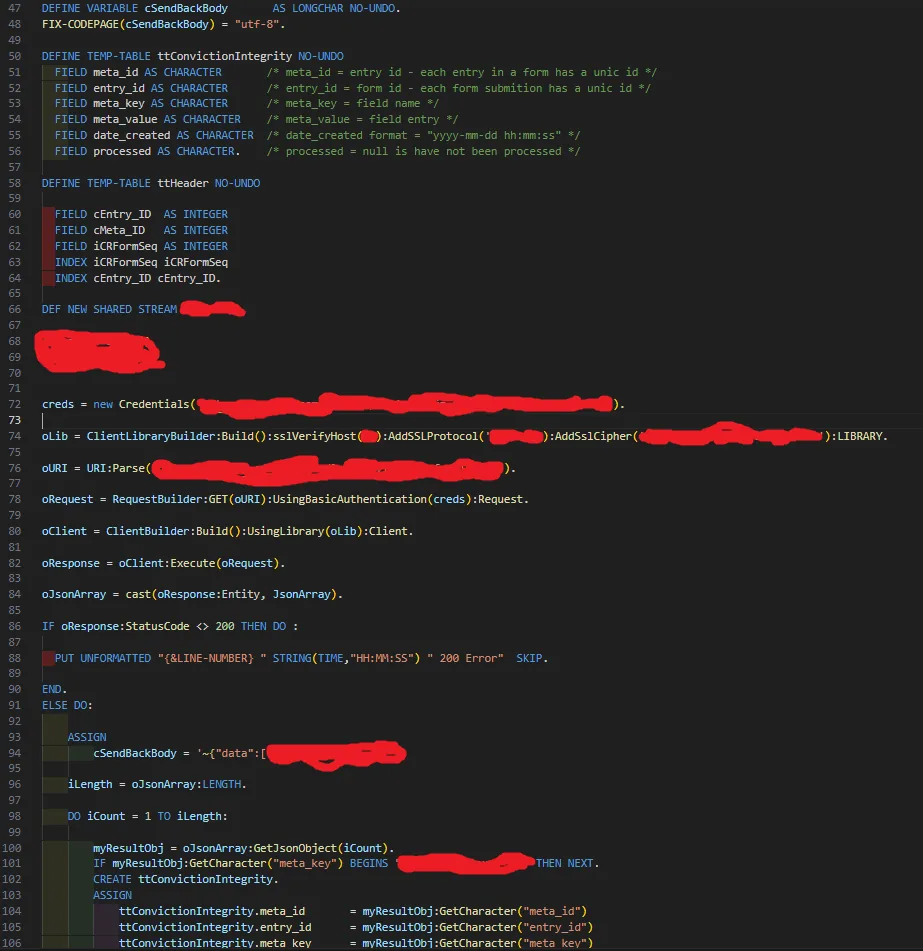

One of the most significant hurdles I encountered during my professional journey was seemingly effortless for most developers, yet it felt as though I was attempting to combine water and oil. I was assigned a task that, for weeks, even my Senior Developer deemed impossible to accomplish. I managed to develop an API bridging two endpoints that were never intended to interact. In other words, I successfully mixed water and oil…
At the end of the journey, I developed a connection between my job program’s with the WordPress website I created. By reading this, you may be asking yourself: “What is this dude talking about? That is literally what every API is supposed to do. How hard is it to pass a JSON in an HTTP request?” .
Now wait… Did I mention that my job’s main application is a program developed in 1996 with a unique programming language called Progress, which received its last update in 2008? Also, connected to a database that does not run on SQL? And JSON…. hahahah you are funny… best It can do is a SOAP with maybe XML if you are the person that created the language, of course – yeah! No examples or documentation can help you with the syntax of this version of the language.
But, a developer never complains; we find solutions:
Discovering WordPress’s Versatility
WordPress had always been our go-to platform for website development, but little did I know about its hidden versatility. Traditionally known as a user-friendly content management system, WordPress surprised me with its vast potential as an API endpoint. It’s adaptability and large user base made it the perfect candidate for bridging the gap between our outdated programs and our modern website.
One of the most exciting aspects of utilizing WordPress as an API endpoint was the freedom to create custom applications tailored to our specific needs. With the REST API at my disposal, I could programmatically retrieve and modify content from our WordPress site. And the best part of WordPress is PHP!!! Yes, I said it… PHP still here! And it is not going anywhere for all of you PHP haters. I also like to mention how important security and authentication were in this connection.
Security and Performance Assurance
While embarking on this journey, I was initially concerned about the security and performance implications of using WordPress as an API endpoint. However, I soon discovered that WordPress offered a range of security measures, including user authentication, access controls, and data validation. By following best practices, optimizing code, and implementing caching techniques, we ensured that our API responses were secure and high-performing.
Taking the bull by its horns
Now that I got my WordPress endpoint secured, up, and running, I need to work on the other end. My approach was simple: “Don’t try to reinvent the wheel. Just put rubber tires around it ;)”.
I used the power of the language to its max potential, and I patched it up with some classes that It needed to make it work like a full-on REST API. I also have some .bat files running on the server to help out. Most of the code I cannot present due to security reasons, but here is an example code snippet that I created during this enlightening process:
A Personal Journey Filled with Transformation
In conclusion, my personal journey of discovering WordPress as a remarkable API endpoint has been nothing short of transformative. What began as a search for a solution to connect outdated systems to our WordPress website led me to uncover a wealth of possibilities. My hope is that sharing my journey will inspire others to explore the potential of WordPress as an API endpoint, unlocking new frontiers of innovation and efficiency.
